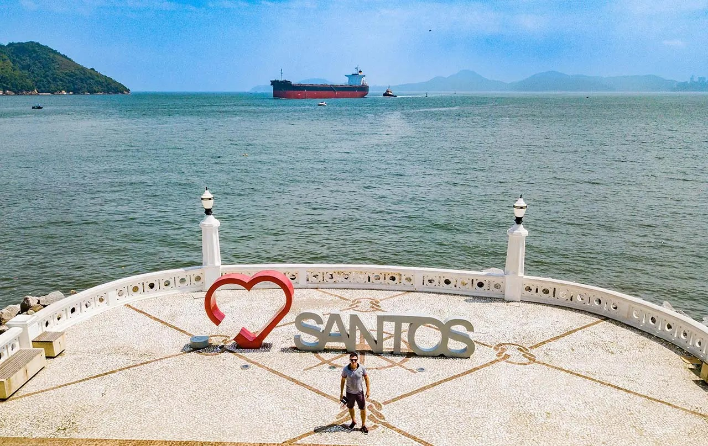

Santos
A cidade de Santos é uma das mais desenvolvidas do litoral paulista, oferecendo uma excelente infraestrutura urbana e fácil acesso a diversos serviços essenciais.
Conhecida por abrigar o Porto de Santos, o maior da América Latina, a cidade possui grande importância econômica e forte movimentação comercial.
Além disso, Santos se destaca por suas praias bem organizadas e pelos extensos jardins à beira-mar, que contribuem para a qualidade de vida dos moradores.
A cidade também conta com pontos turísticos como o Monte Serrat e um centro histórico preservado, com construções antigas e atividades culturais.
Assim, com bairros bem estruturados e diversas opções de lazer, Santos pode ser o lugar ideal para quem busca morar no litoral com conforto e praticidade.
